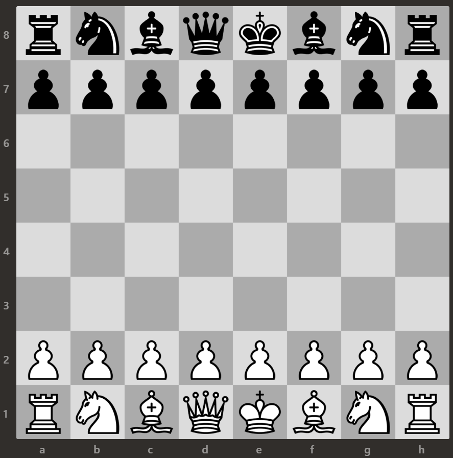

Home
I like playing chess but I have a tough time keeping track of various openings and defenses. After all, after a singular move for both players, there are 400 unique positions that can occur on the board. This website will keep track of some basic openings and defenses that I have learnt so far.
Openings:
- 1e4:
- Italian Game
- Giuoco Piano
Defenses:
- 1e4:
- Scandinavian Defense
Future Possibilities:
- Queen's Gambit
- Vienna Game
- Sicillian Defense